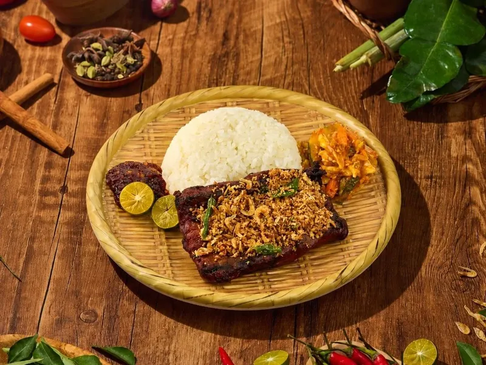
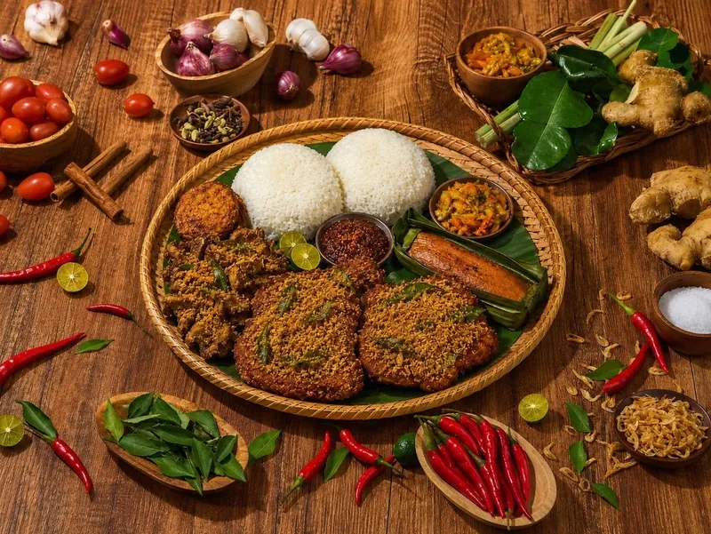
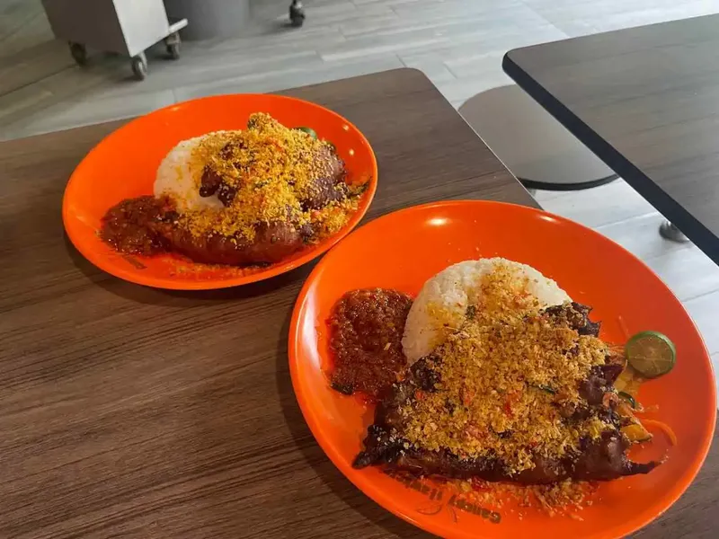

The next Berempah Bros counter is confirmed and coming to a hawker centre near you. Location, opening date and (maybe) an opening special drop first on Instagram — eyes on the 'gram, bro.
hot from the fryer, fresh to your feed
The Berempah Bulletin
Stall Openings · New Dishes · PressIntroducing Our New Duck Confit Berempah

The Bros went French, then dragged it straight back to the kopitiam: Duck Confit Berempah — slow-cooked duck leg, crisped up and hit with the signature rempah treatment. On the menu at Gepuk Guys, Bedok at $16.50, as covered by Eatbook.
Say Hello To Gepuk Guys

Our sister stall is live. Gepuk Guys serves Indonesian-inspired gepuk — turmeric-marinated fried chicken, lightly smashed, with cashew-nut sambal — from Stall 3, Jofa Coffeeshop, 531 Bedok North Street 3, daily 10:30am–10:30pm.
Mains from $9.90 (Ayam Berempah Gepuk), with grilled squid, unagi and duck confit on the roster. No pork, no lard at this one. Full story on Eatbook.
Stall No. 4: Woodleigh Village
The fourth Berempah Bros counter opened at Woodleigh Village Hawker Centre — 202C Bidadari Park Drive, right by Woodleigh MRT (NE11). Same overnight rempah, same crunch, now for the Bidadari side of town.
Sengkang, We're In: Happy Hawkers
Stall No. 3 landed at Happy Hawkers, 267 Compassvale Link — right next to Ranggung LRT. The opening ran a Pork Berempah special that had the queue snaking past the drinks stall, and northeast-siders have kept it moving since.
Where It Started: Beauty World

MasterChef Singapore champion Derek Cheong opened the first Berempah Bros at Beauty World Food Centre #04-51 — one dish, done properly: 16-spice ayam goreng berempah under a shower of garlic, breadcrumb, kerisik and sakura ebi crunch.
The food blogs came fast — DanielFoodDiary compared the crumbs to "a lovechild between prawn cereal and HK-style typhoon shelter crab toppings," and the queues haven't really stopped.
that's all the news for now — go makan lah